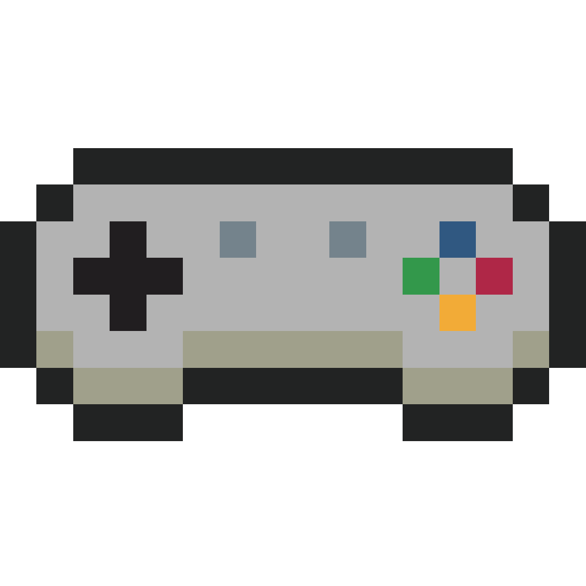
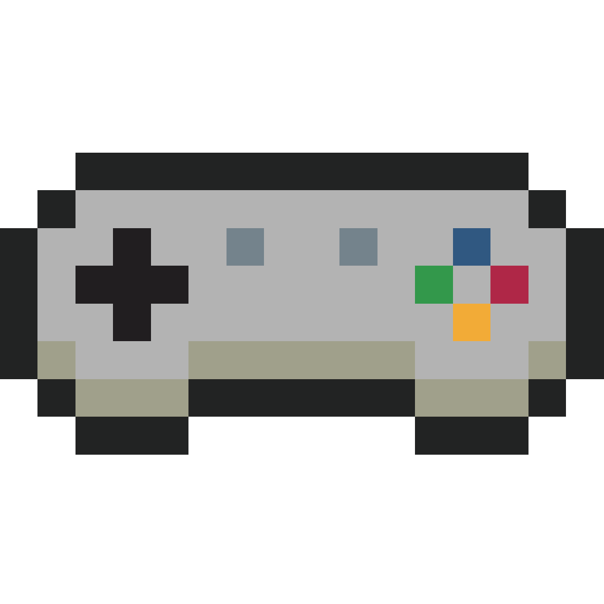

Printing and Manufacturing, Small Business
One week
In this exciting project, I had the pleasure of working on a commission piece for Sumlilthings' highly anticipated "Gamer Collection" event. My mission was to design pixel art assets for seven distinct characters, each with its own unique flair and personality. The ultimate objective was to transform Sumlilthings' standard characters into a retro, throwback ’90s style that would resonate deeply with their gaming audience. To achieve this, I immersed myself in the world of classic gaming and studied timeless assets that would be recognizable to both young and old audiences. The end result was a stunning collection of pixel art assets that perfectly captured the essence of the gaming world, infusing it with a sense of nostalgia and timeless appeal.
During this phase, I studied the most successful games and consoles of the 1990s to understand the limitations that artists faced when creating pixel art assets. By examining the resolution constraints of these consoles, the optimal resolution for the project's characters was determined. The color palettes and art styles from iconic games like Pokemon and Super Mario were used as references to guide the development of the characters, which had a limited color palette of 5-8 colors and were sized at 16x16 pixels. These findings were applied to the project, resulting in the creation of visually appealing characters reminiscent of classic games from that era of gaming.
 


I started by understanding the features of the characters. Due to the limitation of being within 16x16 pixels, I had to determine the distinct features of every character to make them recognizable.


Lil (Feature is the long ears)

Mimi (Feature is the flower on the ears)

Oatmeal (Feature is the two-tone color of its fur)

Cinnamon (Feature is the solid color of its fur)

Chichi (Feature is the feathers on top of its ear)

Nohnoh (Feature is his body shape)

Narnar (Feature is the horn on top of its head)
The client was consulted regularly during the character design process to provide feedback on various iterations. By incorporating this feedback, the final product was able to exceed expectations and fully capture the desired style and aesthetic.


During the design process for Lil, the focus was primarily on the length of the character's ear, with variations being made to find the most suitable length. For v1 I was conservative on the pixel length, so it ended up being only 15X15 pixels. After talking with the client they wanted to increase the ear length which took up the remaining space.


Since Mimi's design had a similar outline to Lil's, the finalization of Lil's design allowed for the simple addition of a flower to create Mimi's design.


Narnar's design presented a unique challenge, as the horn was his main defining feature, but it was also important to convey his identity as a whale through his body shape. Multiple variations were explored to determine the optimal balance between showcasing the horn and accurately conveying the character's species.


Nohnoh's defining features were his scales and body shape, which presented an interesting challenge during the design process. In the initial variation, emphasis was placed on showcasing the scales, resulting in a different outline color and style. However, after consulting with the client, it was decided that Nohnoh's design should conform to the outline style of the other characters for consistency and aesthetic purposes.
Designing these three characters proved to be a straightforward process, as their defining features were easily captured and successfully translated into their respective designs in the initial design phase.
Upon finishing the project, I took a crucial step in ensuring its versatility and quality by transferring the assets into Illustrator for vector conversion. This step was necessary due to the various mediums that the characters would be printed on, including pins, stickers, calendars, and washi tape. By converting the characters into vectors, I ensured that they maintain their high quality and resolution, no matter the size or format of the final product. This not only enhances the visual appeal of the characters but also provides practicality and ease in their production and distribution.


The project was a valuable experience that provided insights into the world of freelance work. I discovered that communication is a crucial element in managing both deadlines and pricing. In response, I developed a comprehensive document that clearly outlined the project's objectives, goals, and deadlines, ensuring that everyone involved was on the same page. I also acquired an understanding of how to price my services appropriately based on the project's budget and estimated hours required for completion. Overall, the project presented a valuable opportunity for personal growth and development as a freelancer, enabling me to apply my newfound knowledge to future projects and further enhance my skills.